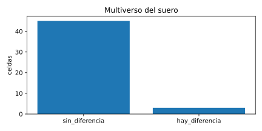

Enmienda v3.2 · sello 293e6ee · semilla 20260914
Qué se hizo y qué salió
La pregunta del suero es si alguna proteína separa el cáncer colorrectal de una colonoscopia negativa, con un cambio de al menos una vez y media y con el falso descubrimiento controlado. Cada cifra sale de results/v3_2/.
Contraste oficial · 205 proteínas
No se detecta diferencia; 105 proteínas son equivalentes.
Cero se declaran distintas entre cáncer y colonoscopia negativa. 100 quedan indeterminadas. Esto responde la pregunta del suero. No propone un examen de sangre.
La lectura del 31 de octubre usó otra matriz, de 876 proteínas, sin el filtro de FDR de proteína ni el de especie. Esos números siguen allí y no se reescriben en esta página.
Qué se hizo
La corrida no busca espectros nuevos y no entrena una red neuronal. Lee archivos ya publicados y aplica reglas escritas antes de mirar el efecto. Python 3.14.3, NumPy 2.4.4, pandas 3.0.2, SciPy 1.17.1, scikit-learn 1.8.0.
Informe de suero
Se lee DIA-NN_report.tsv de PXD055218, el depósito de Rai et al., 2025. DIA-NN es el programa de los autores. Esta corrida no lo ejecuta. El fichero tiene 213 313 241 bytes y el SHA-256 de la enmienda. 60 corridas, 897 grupos.
Filtro
La celda es la mediana de las filas con q del precursor ≤ 0,01 y q del grupo ≤ 0,01. Entra el grupo si su q global mínimo es ≤ 0,01 y el nombre es humano. Un hueco sigue hueco. Quedan 312 grupos. 307 tienen gen. Los cinco sin gen se conservan: el índice es el grupo.
Contraste oficial
Salen, enteras, la biblioteca de contaminantes de Frankenfield y las listas de eritrocitos, plaquetas y coagulación. Quedan 205 proteínas. Las queratinas de piel salen con la biblioteca y vuelven en la versión que las conserva.
Escala
La intensidad es lineal y se pasa a log2 una sola vez: log2_de_intensidad_lineal. Un log2FC de 0,585 es un cambio de 1,5 veces.
Treat y equivalencia
Smyth, 2004 reparte la varianza. McCarthy y Smyth, 2009 preguntan si el cambio supera 0,585. Benjamini y Hochberg, 1995 cortan en 0,05. TOST usa el mismo umbral. Cada proteína queda distinta, equivalente, indeterminada o en conflicto.
Otras versiones
El mismo contraste se repite con contaminantes, con paneles, ajustado por la puntuación de coagulación, y al nivel de gen con Genes.MaxLFQ. Esas reglas se fijaron antes de ver el efecto.
AUC de una proteína
Se pliega el AUC y se mira el máximo de la matriz. El nulo permuta las etiquetas 10 000 veces, en tres matrices: humana filtrada, sin contaminantes, y la principal.
Calidad de la muestra
Se cuentan precursores. La puntuación de coagulación y la de piel son la mediana de cada lista en puntuación z. Kruskal–Wallis compara grupos. Hodges–Lehmann da la diferencia cáncer menos colonoscopia negativa.
Un modelo
Regresión logística con penalización L2. Dentro de cada pliegue se imputa la mediana, se escala y se elige la penalización. Validación de 5 pliegues, 20 repeticiones, 1 000 permutaciones. La pregunta es cáncer frente a colonoscopia negativa.
Tejido, aparte
La matriz de Tanaka et al., 2024 (PXD034575) pierde 237 filas CON__, REV__ y las marcas de MaxQuant. El cero es ausencia. El contraste es pareado, mínimo 8 pares. El signo se compara con 688 proteínas de Vasaikar et al., 2019 (PDC000116). La cohorte del contraste es PXD034575. Las otras no se funden.
Atlas de enfermedades
El fichero del Human Protein Atlas trae 60 enfermedades. Una proteína es específica si el colorrectal frente a sanos pasa el corte, está medida en otro cáncer y en una enfermedad que no es cáncer, y ninguna otra enfermedad pasa el mismo corte.
Rejilla
48 celdas fijadas de antemano: dos cambios, dos alfas, tres reglas de presencia, contaminantes sí o no, coagulación sí o no. La celda preregistrada es cambio 0,585, alfa 0,05, mínimo de 3, contaminantes fuera y coagulación fuera.
Qué salió del suero
Fuente: suero_resumen.json y los TSV k4_*.tsv. La barra parte equivalentes, indeterminadas y distintas.
EquivalenteIndeterminadaDistinta
| Versión | Contraste | n | Distintas | Equivalentes | Indeterminadas | Composición |
|---|---|---|---|---|---|---|
| Principal | Cáncer frente a colonoscopia negativa | 205 | 0 | 105 | 100 | |
| Principal | Cáncer frente a sanos | 205 | 2 | 104 | 99 | |
| Principal | Colonoscopia negativa frente a sanos | 205 | 0 | 128 | 77 | |
| Con contaminantes | Cáncer frente a colonoscopia negativa | 312 | 0 | 170 | 142 | |
| Con los paneles | Cáncer frente a colonoscopia negativa | 213 | 0 | 108 | 105 | |
| Ajustada por coagulación | Cáncer frente a colonoscopia negativa | 205 | 0 | 76 | 129 | |
| Genes, MaxLFQ | Cáncer frente a colonoscopia negativa | 199 | 0 | 100 | 99 |
En ninguna versión el cáncer se separa de la colonoscopia negativa. Frente a sanos pasan SAA1 (P0DJI8), log2FC 3,033 y FDR 0,000483, y LBP (P18428), log2FC 1,254 y FDR 0,00220. Son las únicas filas diferente de k4_crc_frente_a_sanos.tsv.
CHMP4A no entra en las 312: su q global de grupo es 0,037. APOA4 está en la biblioteca de contaminantes y sale de las 205. En la versión que conserva contaminantes, APOA4 baja en la colonoscopia negativa frente a sanos (log2FC −1,323, FDR 0,00713). Esa fila no es el contraste oficial.
37 proteínas de la matriz filtrada se observan en menos del 70 % de las muestras. Un hueco no se convierte en cero.
La rejilla de 48 celdas repite la frase. 45 celdas, el 93,75 %, concluyen sin_diferencia.

multiverso.json. 45 de 48 celdas concluyen sin diferencia.Lo que cambia con la muestra
Piel confusión preanalítica
p = 3,37 × 10⁻⁶. Diferencia de Hodges–Lehmann +1,193 entre cáncer y colonoscopia negativa.
Coagulación confusión preanalítica
p = 0,000991. Diferencia de Hodges–Lehmann +0,722. El nombre de la corrida no trae la fecha de adquisición y los crudos no se descargaron. El orden de corrida queda como límite.
El modelo logístico
Única pieza de aprendizaje automático. Ordena cáncer por encima de colonoscopia negativa. El intervalo es el cuantil 2,5 y el 97,5 de los pliegues. Con 1 000 permutaciones el p no baja de 0,001. Fase 1. Fuente: ml_suero_permutacion.json.
Humanas filtradas p = 0,001
Media del nulo 0,498.
Sin contaminantes ni paneles p = 0,001
Media del nulo 0,497. El intervalo baja hasta 0,765.
Solo coagulación control
Media del nulo 0,504. p = 0,001. Una variable de la muestra ya separa los grupos.
Qué salió del tejido
Otra pregunta: si el cambio del primario frente a su mucosa se repite en CPTAC. Fuente: k1_etiquetas.json. 16 pares. Nadie se excluye por hígado, mucosa o cromosoma Y. P es primario, M es metástasis hepática, N es mucosa.
| Contraste | Mismo signo | Intervalo | Spearman | Lin |
|---|---|---|---|---|
| Primario frente a mucosa, pareado | 89 / 90 | 0,940 a 0,9997 | 0,713 | 0,704 |
| Metástasis hepática frente a mucosa | 69 / 82 | 0,744 a 0,913 | 0,680 | 0,390 |
| Primario frente a mucosa, sin parear | 95 / 98 | 0,913 a 0,994 | 0,682 | 0,689 |
H1 queda en rechaza_h1. Para sostenerla, el límite superior del intervalo tenía que quedar por debajo de 0,70. En el primario está en 0,9997. Cobertura: 90 de 688 proteínas certificadas.
Permutación del signo: mediana 0, pasa
CA1, AQP8, SLC26A3, GUCA2A: sin evaluar
Matriz principal sin identificadores marcados
13 queratinas de piel; el AUC máximo baja de 0,939 a 0,865
Lo que esta corrida no calculó
Filas de hipotesis_v3_2.tsv. Un motivo no es un resultado a favor ni en contra.
H5 no disponible
Otros carcinomas. El de endometrio no tiene 8 pares con el mismo identificador. El mínimo no se bajó.
H6 no evaluable
Origen celular. La matriz de referencia está en disco. Este corte no ajusta la interacción.
H7 no evaluable
Secuencia. Álvez y Wannberg publican estadísticas, no una matriz de muestras. Los modelos de secuencia no se ejecutaron. No hay AUC de H7.
H8 no disponible
Estadio. PXD064655 no está en el disco.
H9 requiere acceso
UKB-PPP. Las estadísticas están en Synapse, con cuenta y condiciones. El programa no se autentica.
H10 no evaluable
De 1 165 proteínas, 0 cumplen la regla de ser específicas del colorrectal, en 60 enfermedades. El preregistro no fija un número para sostener o refutar, así que el conteo se publica y el veredicto no se inventa.
H2, H3, H4 no evaluables
Se heredan de la corrida anterior y no se recalculan.
Lectura de un número
La frase del suero sale de las 205 y de la colonoscopia negativa. SAA1 y LBP separan el cáncer de los sanos. El AUC ordena personas; treat decide el cambio. 89 de 90 es tejido contra tejido.
Ninguna sección contiene ese texto.